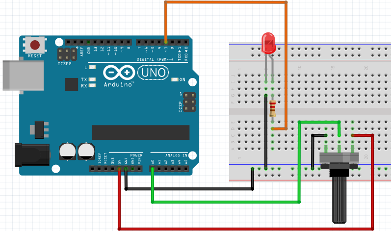

Praktik Analog Input to PWM Output MicroPython
Kontrol Dimmer LED Manual dengan Potensiometer (ESP32)
Pelajari cara membaca sinyal analog dari Potensiometer menggunakan
modul
machine.ADC
(rentang 0–4095) lalu konversi menjadi sinyal PWM
duty()
(0–1023) secara langsung menggunakan perhitungan matematika dasar di
MicroPython.
Skema Rangkaian ESP32
ADC: GPIO 34 | PWM: GPIO 3
Visual Hardware
ADC34 & GPIO 3
ADC: 2048 | DUTY: 512 (50%)
Putar
Potensio:
2048
0
2048
4095
Program Dimmer LED Potensiometer MicroPython
Membaca ADC 12-bit ESP32 (0–4095) dan mengonversikannya ke rentang PWM duty cycle (0–1023) menggunakan operasi matematika sederhana.
misi_potensio_pwm.py
MicroPython (ESP32)
Shell (MicroPython REPL)
MicroPython v1.23.0 on ESP32
Type "help()" for more information.
>>> [REPL Ready. Geser slider potensiometer lalu klik tombol Play (Hijau)]
Type "help()" for more information.
>>> [REPL Ready. Geser slider potensiometer lalu klik tombol Play (Hijau)]
MicroPython v1.23.0 | ADC: GPIO 34 | PWM: GPIO 3
MicroPython (ESP32) • COM3
Serial Monitor (Simulasi Analog Input)
[Serial Monitor Siap. Geser slider potensiometer lalu klik "Upload
& Run"]
Status: Connected @ 9600 baud